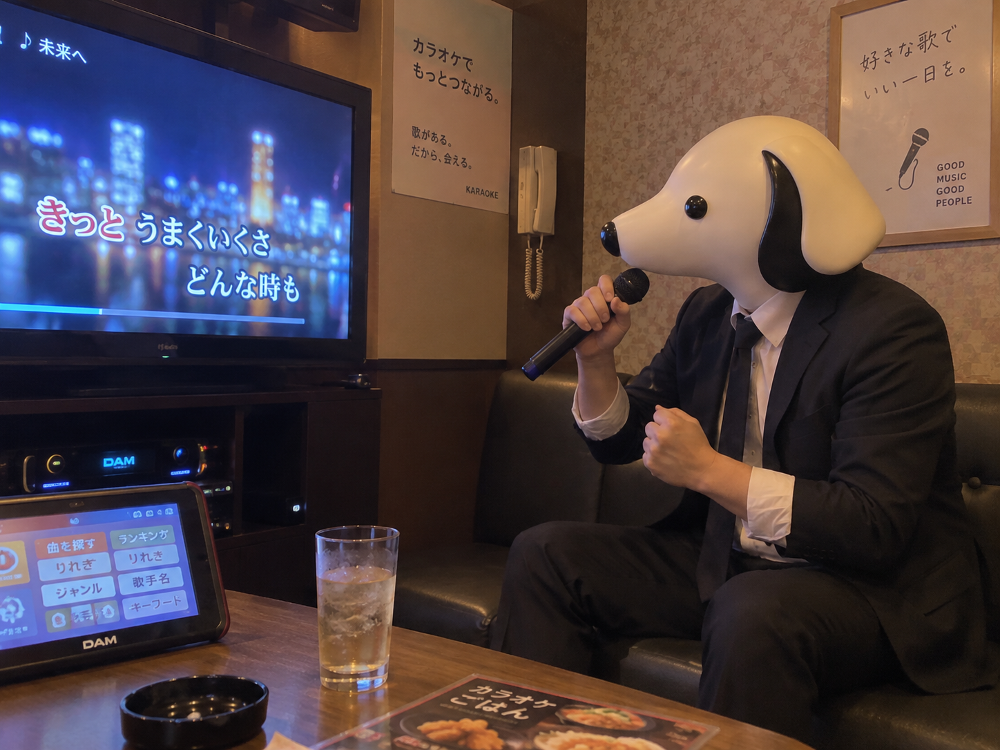

CEO'S NOTE
歌いに行って、サビだけ自信がある

こんにちは。TY-Dev Works CEOのT-Yです。
今日は一人で、カラオケに来ています。
東京は最高27.4度。
雨は降らず、10月にしては少し暑い一日でした。
せっかく天気がいいのに、僕は自分から窓のない部屋へ入っています。
人生には、そういう日もあります。
部屋に入って、飲み物を置きます。
マイクを取ります。
リモコンを開きます。
最初の一曲は、かなり有名な曲を選びました。
何度も聞いたことがあります。
サビも知っています。
つまり歌えるはずです。
演奏が始まりました。
最初の歌詞が出ました。
知らない部分でした。
有名な曲を知っていることと、一曲全部を歌えることは別問題です。
開始十五秒で、それを学びました。
一番の前半は、かなり慎重に進みました。
知っている単語だけ少し大きく歌う。
分からないところは、雰囲気で通る。
画面を見る。
次の行を読む。
少し遅れる。
また画面を見る。
僕は歌っているというより、リアルタイムで仕様書を読んでいました。
そして、サビに入ります。
急に全部分かります。
声量も上がります。
さっきまでの僕とは別人です。
一人なので、誰にも説明する必要はありません。
曲が終わると、採点結果が表示されました。
72点。
絶妙です。
悪すぎて笑うほどではない。
良かったと言うには少し勇気がいる。
機械は、こういうところでかなり冷静です。
僕はしばらく画面を見ていました。
画面も僕を見ているような気がしました。
たぶん気のせいです。
休憩しながら、今日のAIニュースを読みました。
Reutersによると、音声AIを手がけるElevenLabsは、インドに数億ドル規模を投資する計画を示しました。
現地チームの拡大やAIモデルの開発に加え、インドの言語への対応も進めるとされています。
同社はすでに14のインド言語でAIエージェントを展開しており、アクセシビリティ分野での活用も広げるそうです。
音声AIの話を読みながら、さっきのカラオケを思い出しました。
僕は歌詞に合わせようとして、ずっと画面を追いかけていました。
でも、本当に便利な音声技術は逆なのかもしれません。
人が機械に合わせるのではなく、機械のほうが人に寄ってくる。
人の話し方は、かなりばらばらです。
声の高さも違う。
速さも違う。
言葉も違う。
言い直すこともあります。
途中で考えながら話すこともあります。
それでも自然に使えるなら、音声インターフェースはかなり強いと思います。
ソフトウェアでも同じです。
利用者が操作方法を覚えてくれることを前提にするより、利用者の自然な行動にソフトウェアが近づく。
ボタンの場所を覚えなくてもいい。
難しい言葉を知らなくてもいい。
やりたいことを伝えれば、ちゃんと届く。
そういう道具は、強いです。
TY-Dev Worksでも、機能を増やすだけでなく、使う側が頑張らなくても済む設計を大事にしたいと思っています。
二曲目は、ちゃんと最初から知っている曲を選びました。
慎重です。
学習しています。
今度はかなり歌えました。
採点結果は74点でした。
二点上がりました。
改善です。
ただし、統計的に意味があるかは分かりません。
帰る前に履歴を見ると、僕が歌ったのは全部で七曲。
そのうち三曲は、サビしかまともに歌えていませんでした。
機械は最後まで僕の声を認識していました。
理解はしてくれましたが、評価はしてくれませんでした。
それでは、また。
Simple Software. A Better Tomorrow.
TY-Dev Works CEO
T-Y 🐕